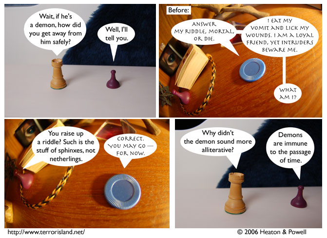

Strip #68
— Friday, November 16, 2006
Sid has a good nose for riddles.
Notes, Thoughts, &c.
Ben’s Notes
It’s a good thing Stephen wasn’t the one facing the demon-riddle. As you probably remember from strip #19, Stephen hates riddles, and would have been unwilling to rise up to the challenge.
See, we’re watching out for continuity issues.
Lewis’s Notes
I’m tired, so Ben is writing my comments again. He didn’t want you to know that, but since he’s accurately writing what he thinks I would have written, I’m able to reveal it against his will.